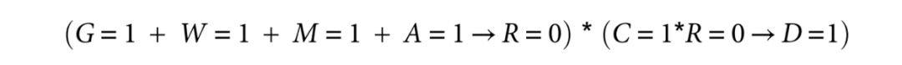
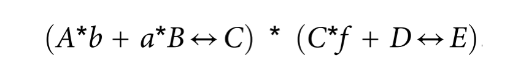
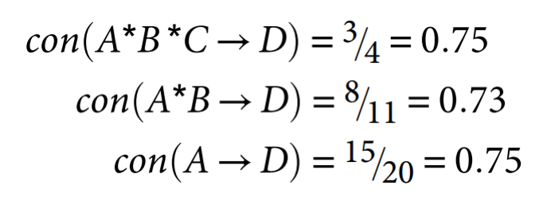
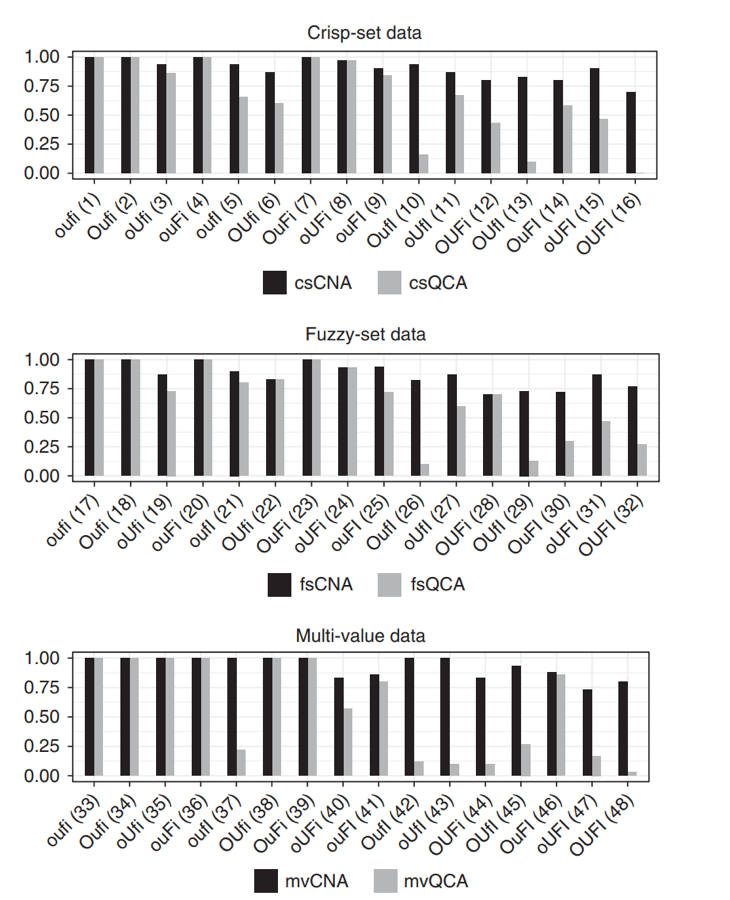
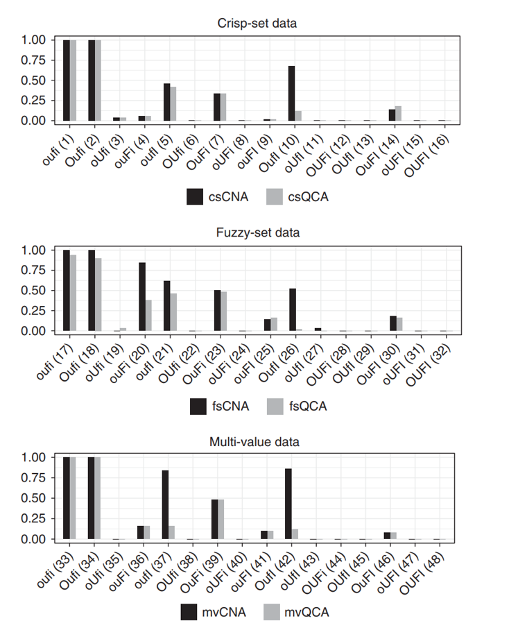

收录于合集
文献来源： Michael Baumgartner and Mathias Ambühl, “Causal modeling with multi- value and fuzzy-set Coincidence Analysis”. Political Science Research and Methods , 2020(8), pp. 571–579.
主要作者简介： Michael Baumgartner，卑尔根大学哲学系教授。
自上个世纪八十年代以来，组态比较方法(CCM，configurational comparative methods)逐渐地被应用于社会科学因果数据分析研究。作为回归分析方法的补充，组态比较方法研究两个变量之间的充分与必要关系，通过将原因集中的元素放置在各种因果路径上来对因果链进行排序，以找出使结果最大可能出现的因果路径，这是一种基于布尔代数逻辑的因果模型。
布尔代数形式的因果模型包含三个复杂的维度：串联性(conjunctivity)，即不同因素的状态需要同时确定（或存在或不存在）才能产生因果效应；并立性(disjunctivity)，即一个结果的产生可能存在不同的且相互独立的因果路径；序列性(sequentiality),即因果效应会沿着因果链传递下去。
 图1 序列性的表现
最为主流的组态比较方法就是定性比较分析(QCA, qualitative comparative analysis)。这一模型由Ragin提出，最初是清晰集定性比较分析(csQCA)的形式，这一模型仅限于对二值变量进行建模。后来进一步发展出多值QCA(mvQCA)和模糊集QCA(fsQCA)。作者认为，既有的QCA方法都关注于联合性和分离性，考察只包括一个内生变量和多个外生变量的模型，却忽略了体现第三个性质的因果链模型。
Baumgartner(2009)基于这一考虑开发出了一致分析(CNA，coincidence analysis)方法，此模型和QCA都是基于布尔代数逻辑，但是不同点在于，CNA可以分析存在多个结果的因果结构，可视作为上图模型量身定制的方法。但是到目前为止，CNA方法仅有清晰集，因此作者将这一方法进行拓展，开发出适用于多值变量的mvCNA和连续变量的fsCNA。同时，到目前为止的CNA方法都采取一种自上而下的路径，即识别出完整的充要条件，再对变量进行删减。而作者使用一种自下而上的路径，逐渐地纳入那些充要条件，且删减冗余条件。
CNA的理论背景
CNA方法基于因果规律理论(regularity theories)来探索因果路径。现代规律理论期望在固定的因果背景下制造布尔差异来定义因果。更确切地说，在某个背景条件下，当外生变量发生变化时，内生变量同时产生变化，则二者在此条件下存在因果关系，否则因果关系不存在。上述讨论中，变量可以是连续变量，可以是二值变量，也可以是多值类别变量。
以下是基于模糊集逻辑的表示法：
X*Y表示取X和Y中的最小可能值
X+Y表示取X和Y中的最大可能值
¬X表示取值1-X
X→Y表示X的可能值小于或等于Y的可能值，也即X为Y的充分条件
XY表示X和Y等价
布尔因果模型以最小化理论(minimal theory)为基础。布尔相关不具有因果关系，而只有那些从最小化理论中导出的布尔相关才具有因果属性。以下面为例

上式表示，A和b的串联是C的充分条件，a和B的串联也是C的充分条件，二者可以相互替代（A和a是二值变量的一对取值，B和b同理）。C和f的串联以及D都是E的充分条件。两边的变量存在直接因果关系，而+两边代表了不同且相互可替代的因果路径。最后，Ab和aB对E存在间接效应，C为中介变量。这就是对上述因果模型的诠释。
布尔因果模型需要强调两点：其一，一般的布尔模型只能论证因果相关性，而不能说明因果关系不存在。即上式中，假设存在G变量，即使式子中不存在G，但不能说明G和C或E没有因果关系；其二，布尔模型要根据既有的数据集来进行解释，它只能说明数据中的变量以及其结构，并不能揭示所有的潜在因果结构。推而广之，如果由两个不同的数据集衍生而出的两个布尔模型存在子集关系，那么这两个模型之间则不存在分歧。
组态比较方法分析m*k形式的矩阵数据，m为观测值数，k为变量数。QCA方法一般将矩阵分为两个部分，分别包括内生变量和外生变量，而CNA方法不需如此。CNA方法首先进行因果排序(causal ordering)，排除不可能的外生变量，将不可排序的值都视作潜在内生变量，据此探索数据中的因果结构。
如果某些内生变量没有测量而导致噪音，那么严格的充分或必要条件关系往往不存在。
故Ragin为QCA提出了一致性(consistency)与覆盖性(coverage)测量方法，该方法也适用于CNA的分析。一致性（取值0-1，下同）反映了结果的表现与模型或其中的充分或必要关系的符合程度；覆盖性反映了模型或其中的充分或必要关系的解释力。因此，如果con=1且cov=1无法满足，那么CNA分析者应当选择较小的阈值，但是降低时应当谨慎，避免过低的阈值造成错误的因果推断。在QCA中，往往设定0.75作为最低的限度，满足这一条件的外生变量组合成为最小项(minterms)。但是CNA往往设定更高的阈值，原因有二：其一，CCM方法的充分条件并不是最小项；其二，模型覆盖率低意味着解释力小，包含的变量不足，故模型可能忽略那些与内生变量和外生变量都相关的因素或者是混杂因素，由此造成模型的可信度较低。
广义CNA算法
有两种策略可以建立最小化理论模型：自上而下和自下而上。前者首先纳入所有充分条件以满足一致性阈值，在此前提下再删除冗余条件，然后并立那些充分条件以满足覆盖性阈值，最后进一步删除冗余条件。而后者一步步纳入条件，检测每次纳入条件后模型是否满足一致性阈值，如果没有，则继续纳入新的充分条件，直到满足以后，在通过并立的方式使模型满足覆盖性阈值。QCA方法和csCNA方法都采用了自上而下的方式，但作者开发的广义CNA方法使用自下而上的方式来构建模型。
尽管看起来两种方法似乎殊途同归，但是对于某些数据集来说，两种方法却可能导致不一样的结果。自上而下的方式有时候并不能删除所有冗余变量，这是由于该方式假定一致性阈值在删除变量过程中是单调递减的，而事实并非完全满足。例如考虑图中删减过程，ABC三个变量同时发生是D的充分条件，一致性为0.75，当删除C后，一致性变成了0.73，再删除B后，一致性恢复0.75。如果按照自上而下的方式，BC两变量无法删除，但是按照自下而上的方式，既可以保证达到一致性阈值，也可以减少冗余变量的存在。

广义CNA算法需要三个硬性条件：1、数据集；2、一致性阈值和覆盖性阈值；3、原子化因果模型最大复杂性的上限。广义CNA算法不需要像QCA一样将数据变成真值表形式，而是可以直接进行操作。CNA的数据处理分为四步：
第一步，在因果排序的基础上建立潜在结果向量O与原因矩阵C；
第二步，对于每一个可能结果，建立最小化充分条件(MSC, minially sufficient conditions)集合并使其满足一致性阈值；
第三步，对于每一个可能结果，在MSC集合的基础上建立原子解公式（ASF， atomic solution formulas）集合并使其满足覆盖性阈值。
第四步，构建一个复杂解公式（CSF，complex solution formulas）集合，这一集合和每个非空ASF集的交集如果有且仅有一个元素，那么该元素就是基于这一数据的潜在结果构造的模型。
模型评估与比较
作者采用逆研究法(inverse searches)来进行模型评估。R中cna包可以用来执行CNA算法，QCApro包可以对QCA方法进行很好的评估。这一过程包括如下步骤：
1. 使用randomDGS从变量集中产生一个数据结构；
2. 使用allCombs从变量集中产生包含所有可能逻辑结构的空间集；
3. 使用makefuzzy将空间集变成模糊集（可选操作）；
4. 使用selectCases从空间集中选择案例组成案例集，并使其满足一致性阈值和覆盖性阈值；
5. 使用some或sample进行随机抽样将数据碎片化（可选操作）；
6. 删除相关变量（可选操作）；
7. 使用cna或eQMC来分析处理过的案例集
8. 检查结果是否输出正确
作者做了48组检验，每组检验中随机产生30-50份数据，其中16份清晰集，16份模糊集，16份多值集。这些数据包括如下缺陷：超定（O）、欠定（U）、数据碎片化（F）和对一致性与覆盖性的非完美解（I）。数据中包含3-4个外生变量和1个内生变量。

上图是CNA和QCA方法在不同类型数据集中，拥有不同数据缺陷条件下的正确率。由图可知，随着数据缺陷增加，两种方法的正确率整体呈降低趋势，但是相比而言CNA方法表现要比QCA方法更好。这是由于CNA方法强调一致性和覆盖性阈值，因此在不满足的情况下拒绝做出因果推断，而QCA方法则没有采用这种策略，因此会做出错误的推断。

为了进一步做出评估，上图反映了两种方法在不同数据集中的完整性比率，即完整揭示数据结构的试验数和整个试验数的比值。从上图可以看出，当数据存在缺陷时，两种方法的表现整体上都不佳，尽管CNA方法有时表现得比QCA方法更好。
结论
通过数据分析与模型比较，作者认为CNA方法不仅仅能够产生多结果模型，而且相比于QCA方法具有更好的拟合度和正确率。对一致性和覆盖性阈值的强调以及自下而上方法的使用保证了CNA方法在实际操作过程中能够有效地避免因果推断的谬误。因此，广义CNA方法能够很好地处理清晰集，模糊集和多值集数据。作为量身定制的组态比较方法，CNA也为布尔类型数据集的处理提供了一个QCA的替代方案
编译：刘天祥 审校：陆屹洲 编辑：郭静远
【政文观止Poliview】系头条号签约作者